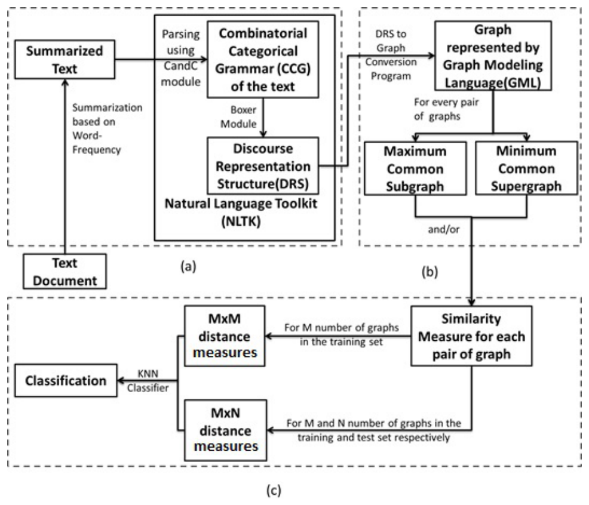
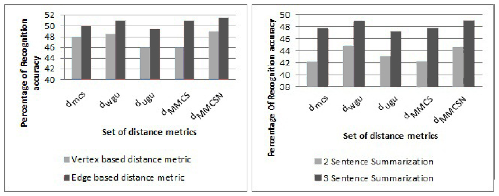

Mixing meaning graphs with word counts lifted text classification to 56%
A text classifier that counts words and one that reads relations between words seem to pick up different information. We built the second kind by turning summaries into graphs, then asked whether letting both vote would help. On a set of Reuters news stories it did. The two together reached up to 56.00% accuracy, against 49.50% for word counting and at most 51.50% for the graphs alone (Table 1, Table 3).
Two ways to read a document
The standard approach, bag-of-words, counts which words occur and ignores how they relate. Our approach keeps the relations. A parser called C&C and a tool called Boxer turn each sentence into a discourse representation structure, a list of the things mentioned and the facts connecting them. We then turn that list into a graph, where things are nodes and facts are labelled edges.
To keep the computing manageable, we first cut each document down to two or three sentences, choosing the ones whose words are the most frequent in the topic. Two graphs are then compared with distance formulas based on their maximum common subgraph (the largest structure both contain) and their minimum common supergraph (the two merged). The exact common subgraph is NP-hard to find, so we used an approximate version that starts from the node pairs sharing the most loops.

Graphs alone
We used 20 Reuters topics with 10 training and 10 test documents each, and a k-nearest-neighbour classifier that labels a document by majority vote among the k most similar training documents. Edge-based measures did better than node-based ones, and three-sentence summaries did better than two-sentence ones. The best graph result was 51.50%, while word counting scored 49.50% on the same three-sentence summaries (Table 1).

Per topic, the two methods disagree in telling ways. Bag-of-words wins on carcass, where words like "beef" and "pork" are enough, with an F1 score of 0.95 against 0.32 for graphs (Table 2). Graphs win on gold, 0.71 against 0.25 (Table 2). The word "gold" also appears in the copper and alum topics, and rare words such as "ounces" and "carat", which counting overlooks, are tied to "gold" by the graph. Averaged over topics, both methods score an F1 of 0.51 (Table 2).
Letting both vote
The two methods do well on different topics, so we combined them. The k-nearest-neighbour classifier from the Weka toolkit gives a confidence for each topic. For every document we averaged the word-count confidence and the graph confidence for each topic and picked the topic with the highest average.
With three-sentence summaries, every combination scored between 54.00% and 56.00%, which is above every individual result (Table 3). The average was 54.5% for node-based and 55.5% for edge-based measures. With two-sentence summaries the combination also scored higher than the graph measure alone (Table 3). We read this as a sign that the graphs hold some information the word counts do not.
Results in more detail
Table 1 lists the accuracy of each single method, before any mixing. Each row is one of the five distance formulas, counted on nodes (vertex) or on edges, and the last row is bag-of-words. The columns split the results by summary length and by k, the number of neighbours that vote.
| Distance | Counts | 2 sent., k = 3 | 2 sent., k = 5 | 2 sent., k = 7 | 3 sent., k = 3 | 3 sent., k = 5 | 3 sent., k = 7 |
|---|---|---|---|---|---|---|---|
| dmcs | vertex | 37.50 | 37.50 | 37.50 | 45.50 | 45.50 | 48.00 |
| dmcs | edge | 45.00 | 45.50 | 49.50 | 47.50 | 49.50 | 50.00 |
| dwgu | vertex | 40.00 | 40.50 | 41.50 | 48.00 | 48.50 | 48.50 |
| dwgu | edge | 45.00 | 51.00 | 50.50 | 47.50 | 50.50 | 50.50 |
| dugu | vertex | 37.00 | 38.50 | 40.00 | 45.00 | 46.00 | 45.50 |
| dugu | edge | 44.00 | 48.00 | 50.00 | 48.00 | 49.50 | 49.50 |
| dMMCS | vertex | 35.50 | 39.50 | 39.50 | 46.00 | 46.00 | 45.00 |
| dMMCS | edge | 42.50 | 46.50 | 49.50 | 49.00 | 51.00 | 49.50 |
| dMMCSN | vertex | 39.50 | 42.00 | 42.00 | 47.50 | 48.00 | 49.00 |
| dMMCSN | edge | 45.00 | 49.00 | 49.50 | 47.00 | 51.00 | 51.50 |
| bag-of-words | 50.50 | 50.00 | 48.50 | 49.50 | 49.50 | 49.00 |
Bag-of-words scored 50.50%, 50.00% and 48.50% with two-sentence summaries and 49.50%, 49.50% and 49.00% with three-sentence ones. The best graph value, 51.50%, comes from the edge-based dMMCSN at k = 7 with three sentences. The lowest value in the table, 35.50%, is the node-based dMMCS with two sentences at k = 3 (Table 1).
Table 3 shows what mixing does. The graph columns hold the accuracy of the graph measure alone, the graph + BOW columns the accuracy after the confidences of the two classifiers are averaged, and the last row repeats bag-of-words alone.
| Distance | Counts | 2 sent.: graph | 2 sent.: graph + BOW | 3 sent.: graph | 3 sent.: graph + BOW |
|---|---|---|---|---|---|
| dmcs | vertex | 37.50 | 48.00 | 48.00 | 54.00 |
| dmcs | edge | 49.50 | 52.50 | 50.00 | 55.00 |
| dwgu | vertex | 41.50 | 51.00 | 48.50 | 55.00 |
| dwgu | edge | 51.00 | 52.50 | 50.50 | 55.50 |
| dugu | vertex | 40.00 | 49.00 | 46.00 | 54.50 |
| dugu | edge | 50.00 | 52.50 | 49.50 | 56.00 |
| dMMCS | vertex | 39.50 | 49.50 | 46.00 | 54.50 |
| dMMCS | edge | 49.50 | 51.50 | 51.00 | 56.00 |
| dMMCSN | vertex | 42.00 | 51.00 | 49.00 | 54.50 |
| dMMCSN | edge | 49.50 | 52.00 | 51.50 | 55.00 |
| bag-of-words alone | 50.50 | 49.50 |
With three-sentence summaries the combined accuracy runs from 54.00% (dmcs, vertex) to 56.00% (dugu and dMMCS, edge), and every combined value is above the best individual result of 51.50% (Table 3). With two-sentence summaries the combined values run from 48.00% to 52.50%, and in every row the combined value is higher than the graph value alone (Table 3).
Discussion
The paper's reading of Table 3 is that the graphs hold some information that word counts do not. Taken alone, the graph approach does about as well as bag-of-words and in some cases better. Mixed with word counts, it did better than either part with three-sentence summaries: the lowest combined value, 54.00%, is above every individual approach. We take this as a sign that semantic information is a useful addition to word counts, which is the paper's own conclusion, rather than a replacement for them.
The results come with limits. We tested one subset of Reuters-21578, with 20 topics and 10 test documents per topic, and used one kind of classifier, k-nearest neighbours. We also had to shrink each document to two or three sentences, chosen by word frequency in the topic, because the exact common subgraph is NP-hard to compute. The effect of that summarising step is still open. We plan to try more sentences or other summarisation algorithms, and to test other learners, such as support vector machines with a graph kernel, a way of comparing graphs inside such a classifier.
The graphs did not replace word counts but added to them.
Sources
The figures and tables listed here are taken from the paper cited at the top of this page; the numbers quoted in the text come from it too.
- Figures: Fig. 2, Fig. 5(a) and Fig. 5(b)
- Tables: Table 1: accuracy of each graph distance and of bag-of-words, for two- and three-sentence summaries; Table 2: recall, precision and F1 per topic, bag-of-words against the best graph distance; Table 3: accuracy when graph and bag-of-words confidences are combined
Cite the paper
N Das, Swarnendu Ghosh, T Gonçalves, P Quaresma (2014). Using graphs and semantic information to improve text classifiers. 9th International Conference on Natural Language Processing (PolTAL 2014), pp. 324–336 · Springer Nature.
@inproceedings{das2014graphs,
author = {Das, N and Ghosh, Swarnendu and Gon{\c c}alves, T and Quaresma, P},
title = {Using graphs and semantic information to improve text classifiers},
booktitle = {9th International Conference on Natural Language Processing (PolTAL 2014)},
pages = {324--336},
publisher = {Springer Nature},
year = {2014},
doi = {10.1007/978-3-319-10888-9_33}
}